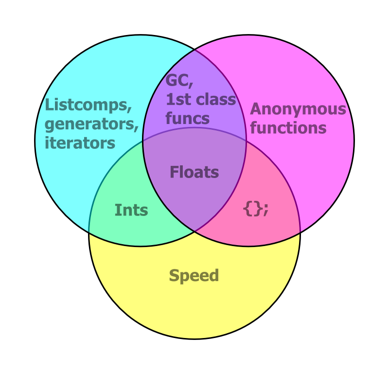

Fiona and Rasterio
Data Access for Python Programmers and Future Python Programmers
Sean Gillies @Mapbox
FOSS4G 2014 ∙ Portland ∙ September 10
New Python packages
- Fiona and Rasterio are Python interfaces to OGR and GDAL
- Each are native GeoJSON speakers
- Each embrace the good parts of Python
The Double Challenge
- Helping experienced Python programmers learn GIS concepts
- Helping GIS experts learn to be better Python programmers
Mapbox Cloudless
We have interesting problems
- Off-the-shelf solutions are scarce
- Trial and error is involved
- We need new software
Software requirements
- Allow rapid prototyping and iteration
- Use dependable algorithms
- Scale out to many computers
Fulfilling requirements
- 1 and 3 argue for open source
- 1 argues for a high-level language with handy multi-dimensional array syntax
- 2 argues for LAPACK (&c) and GDAL
- The fit: Linux, Python, Numpy, Scipy
GDAL Python bindings?
- They've served us long and well
- But they don't fit well with the good parts of Python
- We can do better
The good parts
OGR Example
from osgeo import ogr
# Create ring
ring = ogr.Geometry(ogr.wkbLinearRing)
ring.AddPoint(1179091.1646903288, 712782.8838459781)
ring.AddPoint(1161053.0218226474, 667456.2684348812)
ring.AddPoint(1214704.933941905, 641092.8288590391)
ring.AddPoint(1228580.428455506, 682719.3123998424)
ring.AddPoint(1218405.0658121984, 721108.1805541387)
ring.AddPoint(1179091.1646903288, 712782.8838459781)
# Create polygon
poly = ogr.Geometry(ogr.wkbPolygon)
poly.AddGeometry(ring)Analogy
# C style
nums = []
for i in range(100):
nums.append(i)
# Python style
nums = list(range(100))
Not just less code – faster
$ python -m timeit -s "nums=[]" "for i in xrange(1000):" " nums.append(i)"
10000 loops, best of 3: 76.4 usec per loop
$ python -m timeit -s "nums=list(xrange(1000))"
100000000 loops, best of 3: 0.0108 usec per loop
Literal syntax: {} for geometries
# Create polygon
poly = {
'type': 'Polygon',
'coordinates': [[
(1179091.1646903288, 712782.8838459781),
(1161053.0218226474, 667456.2684348812),
(1214704.933941905, 641092.8288590391),
(1228580.428455506, 682719.3123998424),
(1218405.0658121984, 721108.1805541387),
(1179091.1646903288, 712782.8838459781) ]]}
Pay only for what you eat
# This is "dumb" data.
data = {
'type': 'Polygon',
'coordinates': [[
(1179091.1646903288, 712782.8838459781),
...
(1179091.1646903288, 712782.8838459781) ]]}
# When you need spatial methods, bring in Shapely.
from shapely.geometry import shape
print shape(data).buffer(100.0).area
Winning the Double Challenge
- Python programmers get GIS data access via familiar Python idioms (dicts, iterators, &c.)
- Future Python programmers learn to do things in the fast and effective Python way
Design of Fiona and Rasterio
- A Python package at the top
- Extension modules (using Cython) in the middle
- Fast loops, typed memoryviews, "nogil" blocks
- GDAL shared library on the bottom
Reading raster data
import rasterio
with rasterio.open(path) as src:
data = src.read()
open()gives you a file-like dataset objectread()gives you a Numpy ndarray- Read windows of data with extended slice-like syntax
Reading vector data
import fiona
with fiona.open(path) as src:
first = next(src)
open()gives you a file-like iteratornext()gives you the next feature record from the iterator- Records are Python dicts
Writing raster data
kwargs = src.meta
with rasterio.open(path, 'w', **kwargs) as dst:
dst.write(arr)
- Get keyword args needed to open a dataset for writing from another dataset
write()takes an ndarray- You can also write to windows of a dataset
Writing vector data
kwargs = src.meta
with fiona.open(path, 'w', **kwargs) as dst:
dst.write(record)
- Get keyword args needed to open a dataset for writing from another dataset
write()takes a feature record dict
Georeferencing
Fiona and Rasterio follow the lead of pyproj
>>> import rasterio
>>> src = rasterio.open('tests/data/RGB.byte.tif')
>>> src.crs
{'units': 'm', 'zone': 18, 'ellps': 'WGS84', 'proj': 'utm', 'no_defs': True}
rasterio.features module
rasterio.features.shapes()yields all the features of an array as GeoJSON-like objectsrasterio.features.rasterize()"burns" GeoJSON-like objects into an array- Dicts, iterators, tuples, ndarrays
- No datasets or layers necessary

{'coordinates': [[(71.0, 6.0), ...]], 'type': 'Polygon'}, ...
rasterio.warp module
rasterio.warp.reproject()maps elements of one array to another, using cartographic projections- No datasets or layers required
- Data created in non-GIS programs can be reprojected for use with GIS programs
Command Line Fun
$ rio --help
Usage: rio [OPTIONS] COMMAND [ARGS]...
Rasterio command line interface.
Options:
-v, --verbose Increase verbosity.
-q, --quiet Decrease verbosity.
--help Show this message and exit.
Commands:
bounds Write bounding boxes to stdout as GeoJSON.
info Print information about a data file.
insp Open a data file and start an interpreter.
merge Merge a stack of raster datasets.
shapes Write the shapes of features.
transform Transform coordinates.
rio.shapes | geojsonio
$ rio shapes /tests/data/shade.tif --precision 5 \
> | underscore extract features.112 \
> | geojsonio
New Releases
- Fiona 1.2
- Rasterio 0.13
- Shapely 1.4
Thanks
- Mapbox satellite team (Chris, Charlie, Amit, Bruno, Camilla)
- Asger Petersen, Mike Toews, Brendan Ward, Kelsey Jordahl, René Buffat, Jacob Wasserman, Oliver Tonnhofer, Joshua Arnott, Phil Elson, Matt Perry
- And especially Frank Warmerdam and Even Rouault